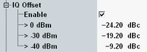

I/Q Origin Offset Limits
An I/Q origin offset is due to an additive sinusoid waveform at the frequency of the reference signal. The standard specifies the I/Q origin offset power limit as a function of the output power of the UE transmitter (see "TX power" in the table).
I/Q origin offset limits for three different TX power ranges can be set in the configuration dialog.

I/Q origin offset limit settings